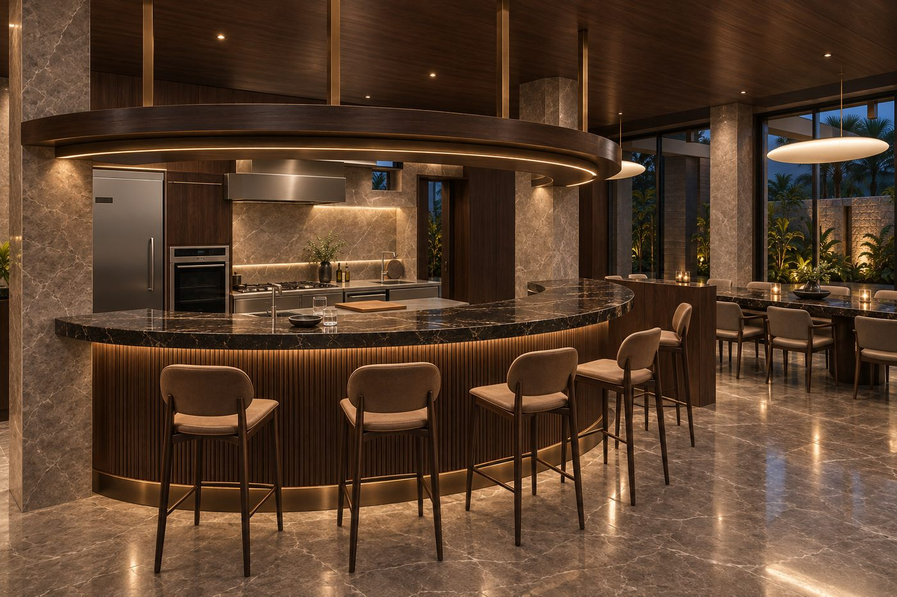

先把接手基準整理清楚
讀取並整理 Claude／cc-tui「民宿泳池布局專案」，辨別 design v23 與 white_v24.py 的關係，保存來源快照、決策摘錄與接手清單。早期全區模型、交換檔與一樓最新設計存在版本落差，因此本輪另存可直接開啟的 Blender 工程檔。
既有交接記錄將方向描述為樓上原 7 房加一樓套房、以 8 房／16 人作設計目標；跨樓層配置與登記房數仍待統一。本報告著重本輪一樓工作，不將其他樓層視為已深化完成。
YONG XIA VILLA · PROJECT JOURNAL
三日工作與成果報告
設計決策・配置演進・視覺成果・後續工作

最新風格提案 · 大弧吧台 / 07一樓已有可接續的設計主線。配置、視覺與工程，各有清楚的完成範圍。
我們已從散落的 Claude 設計資料，建立可編輯、可回查的 Blender 一樓主模型；接著依你的回饋保留大弧吧台、深化廚房、調整泳池與池門，並完成一樓多角度材質概念圖。Unreal Engine 的安裝與基本匯入已實測通過，完整民宿場景尚未匯入 UE。
保留每次取捨，也標示已撤回或被後續版本取代的內容。
讀取並整理 Claude／cc-tui「民宿泳池布局專案」，辨別 design v23 與 white_v24.py 的關係，保存來源快照、決策摘錄與接手清單。早期全區模型、交換檔與一樓最新設計存在版本落差，因此本輪另存可直接開啟的 Blender 工程檔。
既有交接記錄將方向描述為樓上原 7 房加一樓套房、以 8 房／16 人作設計目標；跨樓層配置與登記房數仍待統一。本報告著重本輪一樓工作，不將其他樓層視為已深化完成。
使用者指定的兩份桌面 DWG 成為主要 CAD 參考。重建樓梯、電梯井、門洞及梯下廁所；修正假牆、門窗未穿牆、家具重疊與池階覆蓋等問題。v23 備品間牆影響梯下廁所入口，依確認改為靠北上鎖淺櫃。
17 支柱曾以 1F CAD 角點復核，最大差約 7.1 mm，這是 CAD／模型比較值，不是現場量測精度。早先「上下層核心不能疊合」的說法後來已修正：上層平面向東 2.19 m、向南 1.32 m 可形成核心局部對位候選；全棟與樓梯標高尚未核完。一樓淨高 3.38 m 繼續標為待現場確認。
| 版本 | 本輪改動 | 現在如何使用 |
|---|---|---|
| R01 | 依 v23 重建白模，修核心、門窗與家具；建立日常／聚會、池門開／關狀態 | 可追溯的起始版本 |
| A | 提出高端公共區方案，嘗試縮吧台與雙餐桌 | 比較方案，未沿用其縮吧台方向 |
| A2 | 依你的要求恢復大弧吧台、廚房與長桌 | 後續餐廚基礎 |
| A3 | 按 16 人早餐、輕食及預約私廚深化廚房；修正椅子實際朝向 | 延續餐廚與座向 |
| A4 | 保持 8.6 × 4 m 水面，泳池往室內平移；東側客房門窗外清空 | 30 張全局風格圖的歷史配置基準 |
| A5 | 移除電視櫃，改 100 吋投影；池門移到長桌北側兩柱之間 | 投影與柱間池門延續至今 |
| A6 | 南側躺椅及紅圈機房；曾將你的要求誤解為整池北移 | 池位已撤回，不作現行依據 |
| A7 | 泳池復位至 A5；改為玻璃屋北牆南移貼池，入口朝西的淺設備間 | 修正泳池與北牆關係 |
| A8 | 移除設備間南側重複牆，共用建築本體牆，回收約 30 cm 深度 | 目前配置主白模 |
| 南入口候選 | 將碎裂角落整合成換鞋收納、藝術牆及清楚主通道 | 獨立提案，尚未成為 A9 主模型 |
主 CAD 核對固定幾何 → A8 延續一樓配置 → 最新 26 圖討論風格。南入口候選另行確認；A4 的 30 張全局圖只作歷史風格比較。
依據：R01 白模說明 ↗A3 廚房與座向 ↗A4 內移與淨空 ↗A5 投影與池門 ↗A7 泳池復位 ↗A8 共牆修正 ↗南入口整合 ↗
把你的要求，對應到模型、圖片與下一步。
SPACE 01
保留大弧吧台、廚房與長餐桌。KTV 日常約 11 席，聚會可借用 5 張餐椅增至 16 席；此時餐區只剩 11 張餐椅，不是兩區同時各 16 席。電視櫃已移除，改成 100 吋投影示意；投影機、遮光、音響及實際吊點尚待選型。
SPACE 02
料理需求已確認為 16 人早餐、輕食與預約私廚套餐。A3 已建立冷藏、蒸烤、烹調、落盤、洗滌及備料分區，並核對吧椅、餐椅、旋轉椅朝向。
西側「超過 300 cm」不能直接當作無柱的操作淨寬。A3 從原圖 x≈1.25 m 線量到遠柱面約 300 cm；從沿用櫃後線 x=1.55 m 到近柱面約 199 cm，兩者起點也不同。中島利用兩柱之間較寬的區域。120 cm 檯面間距是模型值，仍須核設備開門與把手。
你提出抽屜式洗碗機後，最新第 09 張視覺圖已修成雙抽屜表達，維持原櫃寬與相鄰抽屜；這不等於 A3 原下掀式包絡已完成機型替換。第 10 張清洗區統一不鏽鋼檯面、抽屜與置物架。設備型號、供電、排煙、給排水及產能仍待深化。
SPACE 03
水面保留 8.6 × 4 m；目前 A8 延續 A7 的修正：池體保持 A5 位置，玻璃屋北牆南移貼著池北外緣。三張躺椅在泳池南側；池門位於長桌北方兩柱間。東侧客房對外窗與出入口外持續淨空。
兩支金屬設備按 SPA 高壓水柱處理，已出外觀深化概念；目前設備估算採約 30°C，暫不做逆流游泳機。A8 原始檔仍含歷史逆流預留，最新視覺場景已隱藏，正式工程模型後續應同步整理。
SPACE 04
A8 設備間主要室內矩形約 3.55 × 1.39 m，扣局部门垛後約 4.90 m²。已做空間初估，但未證明全部設備及維修通路放得下。
既有報告提出室內 8–10 m²、室外熱泵區 6–9 m²作前期預留，這是規劃假設，不是最低法定面積或廠商定案。室外額度暫以單台候選及其進排風／維修需求估算，雙機可能需增加；不含大型除濕、客房生活熱水、獨立藥劑庫與未定平衡水箱。
舊 PDF 左側原泳池區依你的現況說明已成空地，已與柱網對照，提出「遠端主設備＋近池 SPA」供比較。概念單程折線約 27 m，不是現勘管長，尚未做泵浦揚程、冬季加熱或實際開挖路徑設計。本輪未把遠端機房正式建入 A8。
SPACE 05
入口以整個柱灣思考：換鞋與收納整合，另一側以藝術牆收整，公共通道清楚導向室內，迎賓服務可利用既有吧台。放大或調整門面的範圍仍為候選；聚會時移動茶几的收放位置也需重排。
風格由早期現代南洋、私人 Villa 精緻化、30 款廣泛比較，收斂到你最後指定的八張照片。最新 26 個視角覆蓋入口、客廳、廚吧、餐區、樓梯電梯、牌室、套房、衛浴、更衣及泳池。第 18、25、26 張原白模主要是牆門殼體，新增內裝屬提案；第 19 張梯下封板亦待確認。
先看最新風格，再回看 30 款探索。圖片可放大，亦可另開展示預覽。
CURRENT MATERIAL DIRECTION
依你最後指定的八張照片，延伸深胡桃木、灰褐石材與暖光。interior-design-expert 的方法用於動線、比例與分層照明檢視。
同視角對照：拖動分界查看。AI 圖中的細節不能反推施工尺寸。
01 沿用入口成果；18、25、26 為新增內裝提案，19 有局部封板提案。
30 STYLES · COMPLETE VISUAL GALLERY
以下直接展示 01–30 全部風格、共 60 張圖。每組左側為吧台，右側為同款全局；手機上依序上下排列。點圖片可放大。
深柚木、砂岩、編織細節；溫暖私宅度假感。
黑木、深灰石、琥珀光；沉穩夜間酒廊。
淺木、白砂石、亞麻；明亮輕盈。
灰綠石、深木、苔綠絨面；濃郁雨林感。
陶紅、焦糖木、奶油白；熱帶夕陽感。
胡桃木、米紙光、米灰石；安靜日式私廚。
暖灰礦物、淡橡木、自然布料；柔和寧靜。
炭黑木、墨灰石、暖米布；克制禪意。
茶綠、柚木、細骨料磨石；在地清雅。
大面灰白紋石、黑木、米白；有張力的藝術感。
洞石、奶油白、胡桃木；溫潤義式住宅。
酒紅漆面、奶白石、煙燻玻璃；精緻都會感。
深綠大理石感、胡桃木、黃銅；珠寶般深邃。
摩卡石、可可木、奶茶皮革；成熟安定。
米白灰泥、浅橡木、砂色織物；悠閒明亮。
低飽和藍、白石、淺木；清爽海島感。
沙色手工磚、胡桃木、古銅；細緻異國感。
磚紅、奶油白、皮革；溫暖地中海莊園。
細框板、奶油白、香檳金；輕盈優雅。
烏木、幾何金屬細線、奶油皮革；戲劇性酒廊。
海軍藍、胡桃木、菸草皮革；私密成熟。
焦糖木、琥珀玻璃、復古奶油皮；溫暖懷舊。
煙燻橡木、米灰石、焦糖皮；家具工藝感。
白橡木、霧藍、暖白；清透安靜。
鼠尾草綠、漂白橡木、米白石；自在陽光。
連續曲面、奶油白、淺石材；安靜雕塑感。
炭灰礦物、黑鋼、米褐皮；建築感鮮明。
拉絲不鏽鋼、暖白石、淺灰軟墊；俐落現代。
霧面古銅、深胡桃、奶茶軟墊；溫暖金屬光。
灰綠玉石、深柚木、米白軟墊；山林度假主題。
包含私人 Villa 質感深化、SPA 外型及峇厘島石材入口。這些圖片保留供比對，最新整體風格以八張指定照片延伸的系列為準。
安裝完成與民宿模型完成匯入，是兩個不同的里程碑。
Fab · Quixel Bridge · RealityCapture
安裝狀態已查核
1 公尺測試立方體
匯入、尺寸、存檔通過
模型、材質、照明與漫遊
尚未完成
UE 5.8.2、Fab、Quixel Bridge 與 RealityCapture 的本機安裝紀錄已完成。UE 使用 RTX 5090 Laptop GPU 成功啟動，並於 9/8 18:59 完成 FBX／GLB 的 1 公尺立方體匯入、尺寸及資產存檔測試，19:04 再次啟動並載入 SetupTest。
已建立 YongXiaVilla 專案，啟用 Python 編輯腳本、Editor Scripting Utilities、Movie Render Queue，配置 DX12／SM6／Lumen。現階段已確認基本匯入工作流可用；完整一樓模型、全套材質、互動漫遊及最終 UE 渲染尚未完成。RealityCapture 僅確認安裝，未做掃描重建測試。
依據：UE 安裝與使用 ↗UE 實測結果 ↗UE 獨立稽核 ↗UE 再次啟動日誌 ↗
UE 專案已建立；工程原檔另行保存。此線上報告展示安裝與實測成果。
以下為建議執行順序；需你決定的範圍與需要現場確認的尺寸分開處理。
以上是建議執行順序，不表示這些後續工作已完成。原始 CAD、既有模型與圖片均保留；本報告將來源連結附於相關章節及檔案索引。
保留交付名稱、版本與狀態，方便追溯工作進度。工程原檔另行保存。
這份線上報告包含圖片展示預覽、樣式與互動工具，可放大或另開圖片。工程原檔、原解析度圖包、完整對話交接及內部檢查紀錄另行保存。
現行參考基準
工程原檔另行保存
歷史基底；已由後續方案深化
工程原檔另行保存
歷史方案；被 A2 更改吧台餐桌方向
工程原檔另行保存
歷史版本；核心設計延續 A3–A8
工程原檔另行保存
歷史版本；廚吧與座向基礎延續至 A8
工程原檔另行保存
歷史版本；全局 30 張使用此版底圖
工程原檔另行保存
歷史版本；投影與柱間門方向延續至 A8
工程原檔另行保存
整池北移已撤回；由 A7 更正
工程原檔另行保存
歷史版本；已深化為 A8
工程原檔另行保存
最新主配置 Blender 模型
工程原檔另行保存
歷史風格探索
工程原檔另行保存
歷史風格深化
工程原檔另行保存
完整 30 款歷史風格庫
工程原檔另行保存
完整 30 款歷史風格庫；幾何為 A4
工程原檔另行保存
入口候選提案；第 03 張為最新風格基準
工程原檔另行保存
最新完整一樓風格視覺系列
工程原檔另行保存
設備空間初估；尚未工程定案
工程原檔另行保存
遠端機房候選評估；尚未回寫主模型
工程原檔另行保存
以下保留來源名稱與核對範圍，供正文引用對照。報告中的設計／設備估算均註明適用範圍；本輪未重新核定外部法規、市場房價或設備選型。完整來源紀錄與工程原檔另行保存。
本次獨立內容稽核：核對範圍與結論已保存在專案紀錄中；完整稽核文件另行保存。